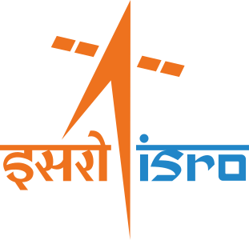
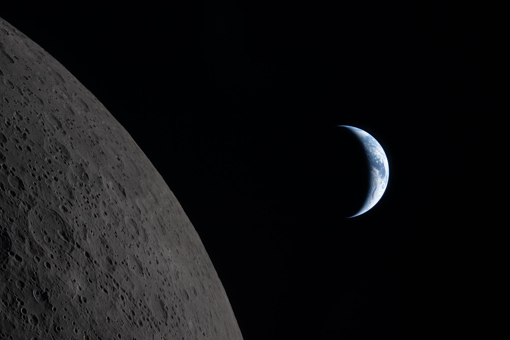

🌌 अंतरिक्ष समाचार | Space News

दिनांक: २९-१०-२०२६ • Date: 29-10-2026 • Time: 12:58 IST • 14 Updates
Reviewer Access
Isro to launch NVS-03 on Oct 30, but NavIC has a long way to go The Times of India
ISRO to launch NVS-03 navigation satellite aboard GSLV rocket on October 30; how to watch live Starlust.org
Isro to launch NVS-03: What it means for India's NavIC navigation system Business Standard
Aishwarya Rajinikanth visits Tirumala; ISRO announces satellite launch The News Mill
ISRO to launch NVS-03 satellite on October 30 The Hindu

Artemis II Commander Reid Wiseman has been named Caltech associate vice president and deputy director of NASA’s Jet Propulsion Laboratory in Southern California. The emeritus astronaut and retired U.S. Navy captain begins his new role at NASA’s center of excellence for robotics and deep space exploration and at Caltech, which manages JPL for NASA, on […]

The Socialist Republic of Vietnam became the 78th nation to sign the Artemis Accords, joining a growing coalition of like-minded nations committed to the peaceful, transparent, and responsible exploration of space. “Vietnam is joining at an important point in the development of its own space program,” said NASA Deputy Administrator Matt Anderson in recorded remarks ...

NASA’s Artemis III SLS (Space Launch System) core stage is integrated alongside the twin solid rocket boosters on Oct. 28 inside the Vehicle Assembly Building’s High Bay 3 at NASA’s Kennedy Space Center in Florida. Technicians lifted the 212-foot rocket stage from the facility’s High Bay 2 using a one-of-a kind lifting beam designed […]
Five years ago, Gavin Gardner was a Michigan State University engineering student researching next-generation drone technology as part of a NASA grant. Garder expected the research to be demanding – but he was surprised that navigating the financial side of the work presented an even greater challenge. Although Gardner was used to leading fellow students […]

So far, 2026 has seen a flood of successes for volunteers who do NASA science, exemplifying NASA’s commitment to gold-standard science—transparent, reproducible and intrinsically collaborative. The Backyard Worlds: Planet 9 project announced that their project volunteers have now discovered most of the known brown dwarfs, celestial objects that are similar to planets. The Zooni...

Iceberg A-81 escaping the Weddell Sea and drifting near the edge of South Georgia's underwater shelf.
NASA is two spacewalks away from completing a major, years-long upgrade to the International Space Station that will power the orbiting lab through to its planned decommissioning in 2030.

Spacecraft could one day change their shape after reaching orbit, allowing operators to add capabilities...